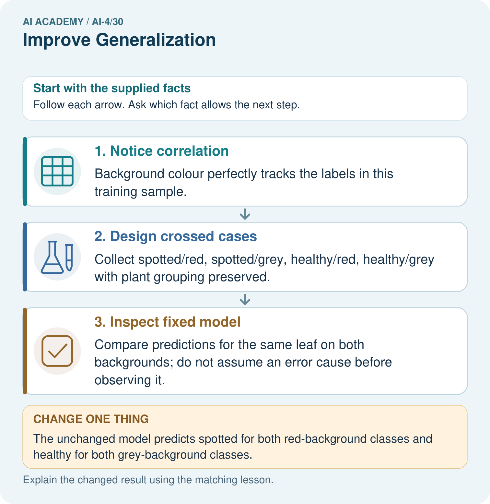
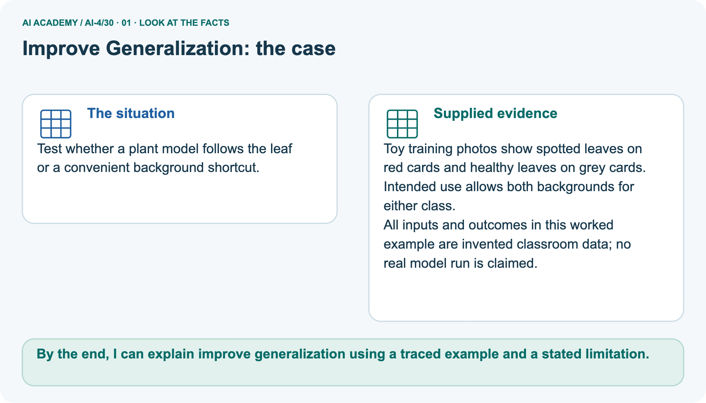
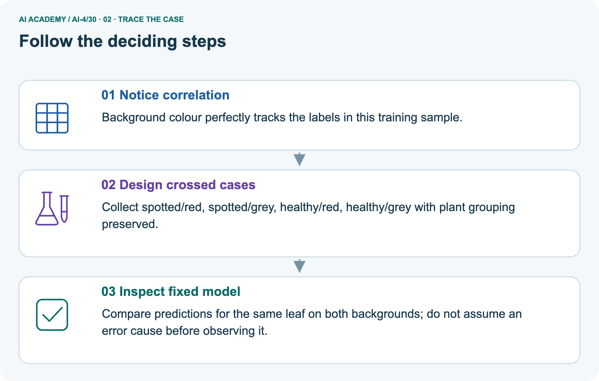
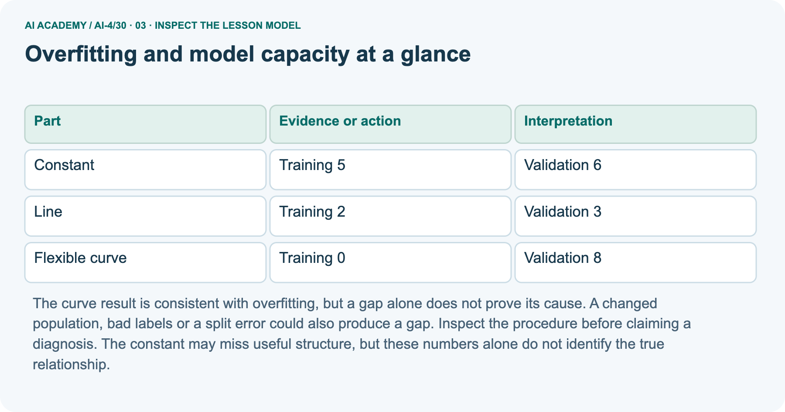
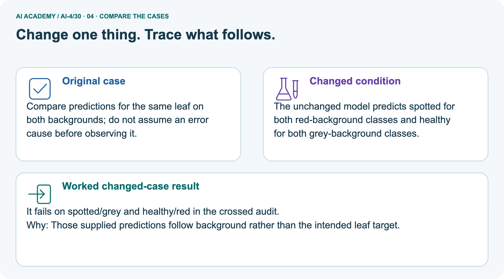
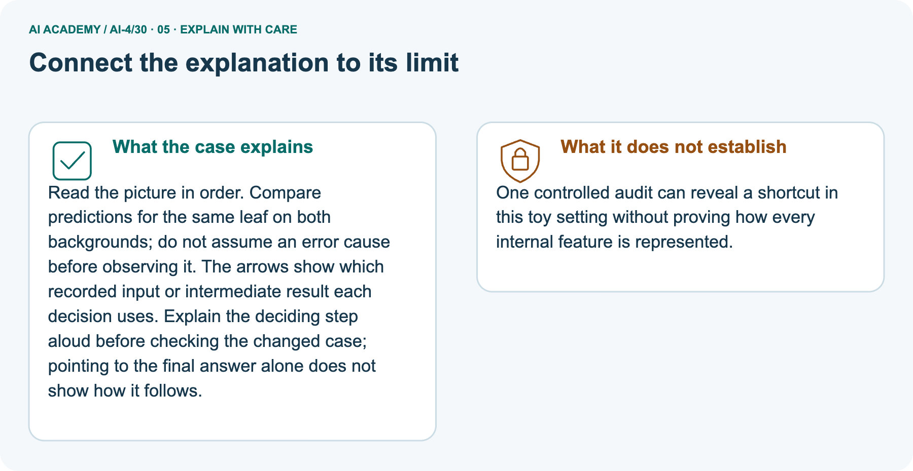

AI Academy · Level 4 · Grade 9 · Week 30 · Workbook
Improve Generalization
Learn to understand, design, build, test and explain AI systems responsibly.
Project: Responsible Plant Classifier
THE CONNECTED WEEK
One current controlled-improvement record.
Trace one data-version change,compare all outputs and design source-aware next evidence.
Keep one habit: Fresh W1–W3/W5fields → selected blue/white plan → project repair record → changed-case return.
Main lesson · Section 1
Recall · Retrieve before notes
Keep this task’s complete inputs, stated rule and support record together.
Task and evidence record
Try the recall before opening notes. Then use a different colour or a labelled second line to correct your explanation.
Without opening the old lesson, explain one key idea from Feature Engineering. Give an example and a mistake that the idea helps you avoid.
Without opening the old lesson, explain one key idea from Overfitting. Give an example and a mistake that the idea helps you avoid.
Without opening the old lesson, explain one key idea from Train, Validation, Test. Give an example and a mistake that the idea helps you avoid.
Feature Engineering
Overfitting
Train, Validation, Test
Main lesson · Section 12
W1 · Declare the controlled experiment
Fresh controlled-improvement responses preserve the earlier capacity-practice fields as review.
Complete current trial reference
Current trial V1T1–T4 hasbackground/markererrors 0/0, background-first tie choosesbackground. V2 addsT5/T6 marker1on grey andT7/T8 marker0on red; errors 4/0 choosemarker. Fixed validationP1 spotted/P2 healthy, eachred/grey:V1 gets2/4 views, V2 gets4/4; only 2 newplants. Same learner, rule, candidate order/tie, validation references and membership; training version changed. Perfect marker alignment is synthetic.
Separate shift fixturebright 2/20=10%, dim 6/20=30%, pooled 8/40=20%; neither pooled result nor condition association proves cause.
Current task and response
Name the changed factor and at least four fixed factors in the complete T/Vtrial. Explain the training-only candidate/tie rule.
Review · Earlier capacity task and saved response
Reference for this exercise: open this week’s student lesson, “Improve Generalization”, at “See how it works” and “Follow a worked example”. Use the original worked values or code named in the question; the later pictorial case is a separate example. Keep this reference beside your workbook while practising.
Choose among the three worked candidates and explain the training trap.
Main lesson · Section 13
W2 · Trace before and after
Fresh controlled-improvement responses preserve the earlier capacity-practice fields as review.
Complete current trial reference
Current trial V1T1–T4 hasbackground/markererrors 0/0, background-first tie choosesbackground. V2 addsT5/T6 marker1on grey andT7/T8 marker0on red; errors 4/0 choosemarker. Fixed validationP1 spotted/P2 healthy, eachred/grey:V1 gets2/4 views, V2 gets4/4; only 2 newplants. Same learner, rule, candidate order/tie, validation references and membership; training version changed. Perfect marker alignment is synthetic.
Separate shift fixturebright 2/20=10%, dim 6/20=30%, pooled 8/40=20%; neither pooled result nor condition association proves cause.
Current task and response
For the complete T1–T8 and P1/P2 fixture, explain V1 and V2 candidate training errors, chosen feature and every validation prediction. Report both view and plant counts. State what was held fixed, what changed and why 4/4 development views do not prove general reliability.
Review · Earlier capacity task and saved response
Does a training-validation gap alone prove overfitting?
Main lesson · Section 14
W3 · Repair a perfect-development claim
Fresh controlled-improvement responses preserve the earlier capacity-practice fields as review.
Complete current trial reference
Current trial V1T1–T4 hasbackground/markererrors 0/0, background-first tie choosesbackground. V2 addsT5/T6 marker1on grey andT7/T8 marker0on red; errors 4/0 choosemarker. Fixed validationP1 spotted/P2 healthy, eachred/grey:V1 gets2/4 views, V2 gets4/4; only 2 newplants. Same learner, rule, candidate order/tie, validation references and membership; training version changed. Perfect marker alignment is synthetic.
Separate shift fixturebright 2/20=10%, dim 6/20=30%, pooled 8/40=20%; neither pooled result nor condition association proves cause.
Current task and response
A team adds crossed training data and inspects 4/4 correct validation views from 2 plants. Does that establish robust performance on new species, cameras or backgrounds? Name the missing evidence.
Review · Earlier capacity task and saved response
Describe one fair next development comparison.
Main lesson · Section 16
W5 · Plan the fresh evaluation
Fresh controlled-improvement responses preserve the earlier capacity-practice fields as review.
Complete current trial reference
Current trial V1T1–T4 hasbackground/markererrors 0/0, background-first tie choosesbackground. V2 addsT5/T6 marker1on grey andT7/T8 marker0on red; errors 4/0 choosemarker. Fixed validationP1 spotted/P2 healthy, eachred/grey:V1 gets2/4 views, V2 gets4/4; only 2 newplants. Same learner, rule, candidate order/tie, validation references and membership; training version changed. Perfect marker alignment is synthetic.
Separate shift fixturebright 2/20=10%, dim 6/20=30%, pooled 8/40=20%; neither pooled result nor condition association proves cause.
Current task and response
Design a next collection/evaluation that tests the frozen revision on new source plants and declared intended-use combinations. State what results are still unknown and why the inspected P1/P2 views cannot be called untouched final evidence.
Review · Earlier capacity task and saved response
What extra evidence would you inspect before concluding a model memorized noise?
Main lesson · Section 4
Try alone · Selected experiment task
Keep this task’s complete inputs, stated rule and support record together.
Task and evidence record
This selected design task uses blue/white training backgrounds, not the completed red/grey toy trial. The training correlation alone does not prove reliance on background. Plan same-leaf crossed-background diagnostics on development sources, one justified training revision, and a separate fresh grouped final evaluation after choices are frozen.
No observed blue/white predictions, benefit or final metrics are supplied; record them as proposed rather than invent results.
Spotted leaves have blue backgrounds and healthy leaves white backgrounds in training. Design a generalisation investigation with fresh evaluation.
Attempt this case before feedback. Record any help. Earlier examples below are further practice; a case already practised with feedback cannot establish fresh transfer.
Independent case: Changed independent case
Main lesson · Section 9
Project · Keep the experiment evidence
Keep this task’s complete inputs, stated rule and support record together.
Task and evidence record
Improve Plant Classifier with one approved change and a full before/after evidence table.
The project change and evidence I will keep
Main lesson · Section 22
Feedback · Repair and return
Keep this task’s complete inputs, stated rule and support record together.
Task and evidence record
Revisit this idea with your teacher after a delay. Familiarity is different from explaining and using it on a changed case.
| Evidence | My record |
|---|---|
| Worked alone / hint / model | |
| First step I repaired and why | |
| New case checked later; date and result | |
| What I can now explain without notes | |
| One remaining question |
Main lesson · Section 10
Finish · Judge your evidence
Keep this task’s complete inputs, stated rule and support record together.
Task and evidence record
- I can explain the mechanism.
- I can show evidence.
- I can handle a changed case.
- I can name a limit.
Mark each as not yet, with help or independently, and attach supporting work.
Teacher review ____________________ Next step ____________________
Reference bank and extra practice
Choose the reference that helps your next step.
Reference · Supported W2 record
Reference · Section 2
Reference · Supported W2 record
Keep this task’s complete inputs, stated rule and support record together.
Task and evidence record
Earlier capacity-practice completion record:retain the saved response as review. Use current W2for the controlled original/crossed training-data trial.
| Given inputs | Procedure I chose | Middle steps | Result and check |
|---|---|---|---|
Extra practice · Individual reasoning check
Reference · Section 3
Extra practice · Individual reasoning check
Keep this task’s complete inputs, stated rule and support record together.
Task and evidence record
Use the worked case for Overfitting and model capacity. Proposed explanation: “A final answer is enough”. Decide whether this explanation is supported.
Point to the step or supplied fact that decides; explain your repair if needed.
Reference · Earlier learning target
Reference · Section 5
Reference · Earlier learning target
Keep this task’s complete inputs, stated rule and support record together.
Task and evidence record
All spotted training leaves use black backgrounds. Propose a collection and comparison that tests the background shortcut without tuning on final test examples.
Extra practice · Earlier complete case
Reference · Section 6
Extra practice · Earlier complete case
Keep this task’s complete inputs, stated rule and support record together.
Task and evidence record
A classifier relies on tray colour; new trays reduce performance.
Propose controlled improvement.
Show your trace, calculation or evidence
Extra practice · Changed case
Reference · Section 7
Extra practice · Changed case
Keep this task’s complete inputs, stated rule and support record together.
Task and evidence record
A team proposes more representative training examples and a simpler model. How should it compare changes while protecting the final test?
My independent answer and reason
Week 30 Test and reflect
Extra practice · Design a revealing test
Reference · Section 8
Extra practice · Design a revealing test
Keep this task’s complete inputs, stated rule and support record together.
Task and evidence record
Create a changed input, boundary case or missing-information case. Write the expected answer or safe response before testing.
| Test record | My evidence |
|---|---|
| Changed input or condition | |
| Expected answer or fallback | |
| Observed result | |
| Why the result occurred |
Extra practice · Earlier transfer
Reference · Section 11
Extra practice · Earlier transfer
Keep this task’s complete inputs, stated rule and support record together.
Task and evidence record
All spotted training leaves use black backgrounds. Propose a collection and comparison that tests the background shortcut without tuning on final test examples.
Record support used: none, hint or teacher explanation.
Reference · Earlier W4 record
Reference · Section 15
Reference · Earlier W4 record
Keep this task’s complete inputs, stated rule and support record together.
Task and evidence record
Models A training 4 validation 5, B training 1 validation 2, C training 0 validation 2. Lowest validation MAE then simpler; B is simpler than C. Choose and justify.
Extension · Distribution shift — W1 Compare conditions
Reference · Section 17
Extension · Distribution shift — W1 Compare conditions
Retained extension task with its own values and teacher key.
Extension question and evidence
Calculate each worked error rate and the difference.
Extension · Distribution shift — W2 Read pooled evidence
Reference · Section 18
Extension · Distribution shift — W2 Read pooled evidence
Retained extension task with its own values and teacher key.
Extension question and evidence
Why is 8/40 incomplete by itself?
Extension · Distribution shift — W3 Wait for labels
Reference · Section 19
Extension · Distribution shift — W3 Wait for labels
Retained extension task with its own values and teacher key.
Extension question and evidence
Can changed predictions alone prove an accuracy drop?
Extension · Distribution shift — W4 Apply independently
Reference · Section 20
Extension · Distribution shift — W4 Apply independently
Retained extension task with its own values and teacher key.
Extension question and evidence
Old-like data has 3 errors/30 and new-condition data 5/10. Give both rates and the pooled rate.
Extension · Distribution shift — W5 Plan a response
Reference · Section 21
Extension · Distribution shift — W5 Plan a response
Retained extension task with its own values and teacher key.
Extension question and evidence
State a safe classroom response to inputs outside the supported range.
Extra practice · Pictured case
Reference · Section 23
Extra practice · Pictured case
Keep this task’s complete inputs, stated rule and support record together.
Task and evidence record
Test whether a plant model follows the leaf or a convenient background shortcut.
Toy training photos show spotted leaves on red cards and healthy leaves on grey cards. Intended use allows both backgrounds for either class.
All inputs and outcomes in this worked example are invented classroom data; no real model run is claimed.
What fresh evidence is needed after adding crossed training data? Point to the relevant step in the picture, then write the changed result and the rule or evidence that supports it.
Support used: alone / hint / worked example. This record is practice evidence.
Project connection: For your Responsible Plant Classifier, save the input, procedure, observed result and limitation of this check.
Label this worked example as practice; use a different, previously unreviewed case when checking independent understanding.



Reference · Project portfolio milestone
Reference · Section 24
Reference · Project portfolio milestone
Keep this task’s complete inputs, stated rule and support record together.
Task and evidence record
Project: Responsible Plant Classifier
Current milestone: Prepare the demonstration. Gather reproducible instructions, evidence, access checks and remaining limitations.
For your Responsible Plant Classifier, save the input, procedure, observed result and limitation of this check.
Label this worked example as practice; use a different, previously unreviewed case when checking independent understanding.
| Evidence to keep | My record |
|---|---|
| This week’s input and deciding step | |
| Prediction and actual result (or labelled paper trace) | |
| One change since the previous checkpoint and why | |
| One error or limit and the next test |
Extra practice · Predict, check and repair
Reference · Section 25
Extra practice · Predict, check and repair
Keep supported feedback separate from the reserved independent case.
First supported question and hint
Test whether a plant model follows the leaf or a convenient background shortcut.
Which labelled step matches this detail? Compare predictions for the same leaf on both backgrounds; do not assume an error cause before observing it.
1. Notice correlation
2. Design crossed cases
3. Inspect fixed model
Hint if needed: Read the steps in the pictorial case. Match the supplied detail to the stage that performs or records it.
Practice 1: explain the deciding evidence
Check the first explanation
After your attempt, compare with the supported explanation: Inspect fixed model Compare predictions for the same leaf on both backgrounds; do not assume an error cause before observing it. Read the picture in order.
Compare predictions for the same leaf on both backgrounds; do not assume an error cause before observing it. The arrows show which recorded input or intermediate result each decision uses.
Explain the deciding step aloud before checking the changed case; pointing to the final answer alone does not show how it follows.
Changed-case question and hint
Changed-case practice: The unchanged model predicts spotted for both red-background classes and healthy for both grey-background classes. Which conclusion is supported by the supplied facts?
1. It fails on spotted/grey and healthy/red in the crossed audit.
2. We can decide the result without examining the changed input or the procedure.
3. This one example guarantees correct results for every future input.
Hint if needed: Use the changed condition and the deciding step in the pictorial trace. The answer must say what follows from those facts.
Practice 2: explain the deciding evidence
Check the changed explanation
After your attempt, compare with the supported explanation: It fails on spotted/grey and healthy/red in the crossed audit. Those supplied predictions follow background rather than the intended leaf target.
Repair and keep the record
Review Feature Engineering (ai-4/29). Goal: Create features available at prediction time. Short practice: What should be saved so another group transforms the query identically?
Point to the relevant step in the picture, then write the changed result and the rule or evidence that supports it.. Return to this week and explain what you changed.
Review Overfitting (ai-4/27). Goal: Compare training and validation evidence for model capacity. Short practice: Does100% training accuracy prove Large was always best?
Point to the relevant step in the picture, then write the changed result and the rule or evidence that supports it.. Return to this week and explain what you changed.
Review Train, Validation, Test (ai-4/24). Goal: Select a model using a declared validation rule. Short practice: Why does B’s zero training MAE not settle the original choice?
Point to the relevant step in the picture, then write the changed result and the rule or evidence that supports it.. Return to this week and explain what you changed.
Use Download completed work in the hosted lesson to export your answers, reflections, practice feedback and code-run evidence. Open the HTML copy to read or print it.
Drafts stay in this browser when storage is available; clear drafts on a shared device.
Earlier wording, alternatives and picture transcripts
Use this supported practice once, in the browser or on paper. Keep the reserved independent assessment for a separate first attempt before teacher feedback.
Repair a missing building block
Keep your completed work
Reference · Six-picture response sheets
Reference · Section 26
Reference · Six-picture response sheets
Choose the relevant picture instead of repeating every task.
01. Improve Generalization: the case



Test whether a plant model follows the leaf or a convenient background shortcut. Supplied facts: Toy training photos show spotted leaves on red cards and healthy leaves on grey cards.
Intended use allows both backgrounds for either class. All inputs and outcomes in this worked example are invented classroom data; no real model run is claimed.
Point to the given fact that matters most. Explain why it matters.
02. Follow the deciding steps



Notice correlation: Background colour perfectly tracks the labels in this training sample. → Design crossed cases: Collect spotted/red, spotted/grey, healthy/red, healthy/grey with plant grouping preserved. → Inspect fixed model: Compare predictions for the same leaf on both backgrounds; do not assume an error cause before observing it.
Point to each numbered stage and explain which recorded input it uses.
03. Overfitting and model capacity at a glance



Overfitting and model capacity at a glance. Constant | Training 5 | Validation 6. Line | Training 2 | Validation 3. Flexible curve | Training 0 | Validation 8
Read the labels and values. Explain the relationship the model shows.
04. Change one thing. Trace what follows.



Original case: Compare predictions for the same leaf on both backgrounds; do not assume an error cause before observing it.
Changed condition: The unchanged model predicts spotted for both red-background classes and healthy for both grey-background classes. Expected result: It fails on spotted/grey and healthy/red in the crossed audit.
Reason: Those supplied predictions follow background rather than the intended leaf target.
Predict before checking the worked changed-case result. Name what changed and what the supplied facts allow you to conclude.
05. Connect the explanation to its limit



Read the picture in order. Compare predictions for the same leaf on both backgrounds; do not assume an error cause before observing it. The arrows show which recorded input or intermediate result each decision uses.
Explain the deciding step aloud before checking the changed case; pointing to the final answer alone does not show how it follows.
Limit: One controlled audit can reveal a shortcut in this toy setting without proving how every internal feature is represented.
Explain the case, then point to a limit on the claim.
06. Make the idea visible in your project


For your Responsible Plant Classifier, save the input, procedure, observed result and limitation of this check.
Label this worked example as practice; use a different, previously unreviewed case when checking independent understanding. Draw your input, deciding step, result and limit.
Supported question: What fresh evidence is needed after adding crossed training data? Point to the relevant step in the picture, then write the changed result and the rule or evidence that supports it.
Draw your project trace and justify the deciding step using evidence.